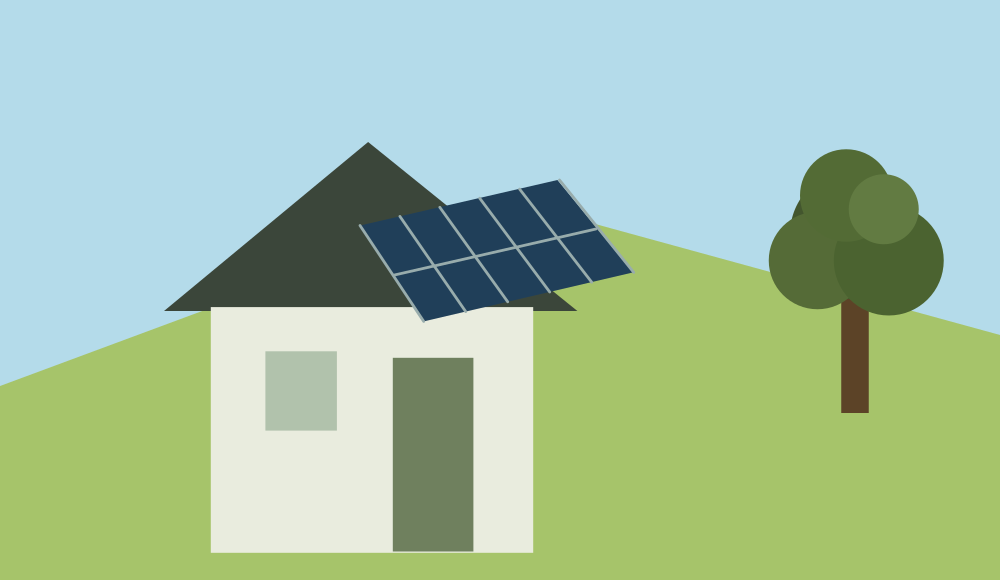
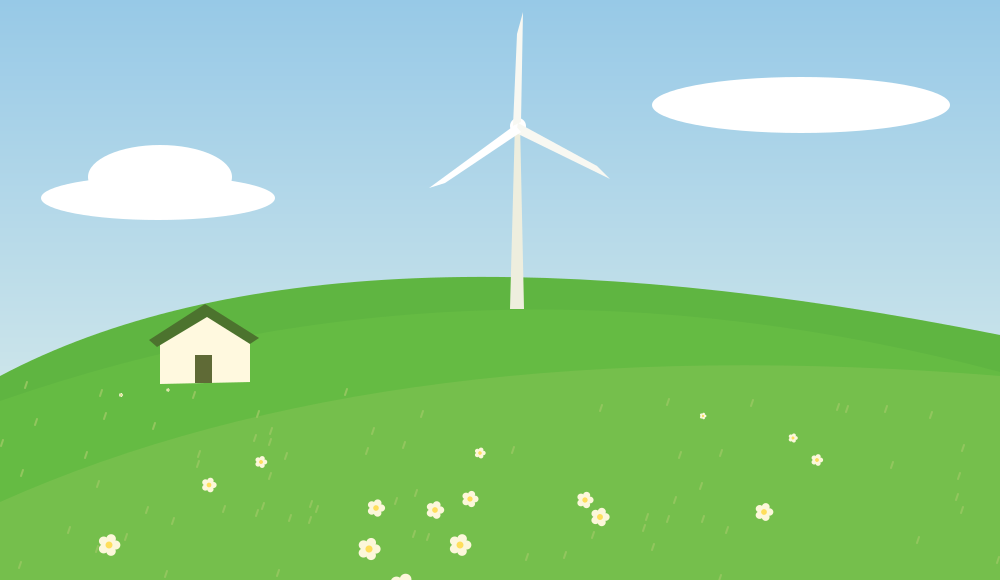
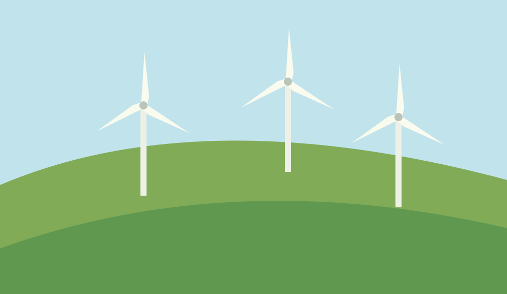
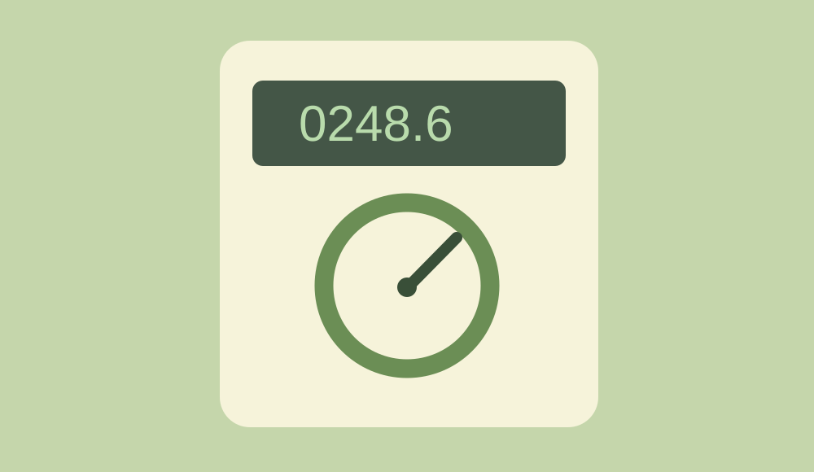

پشتبام
خورشید روی سقف
بررسی جهت سقف، سایهها و ظرفیت نصب پنل.
برق خانهات را از خورشید و باد بگیر. مصرف، هزینه و منبع انرژی را هر ماه شفاف ببین.
برآورد مصرف من
از پنل روی پشتبام تا سهمی از یک نیروگاه محلی.

بررسی جهت سقف، سایهها و ظرفیت نصب پنل.

دریافت سهم تولید یک توربین بدون نیاز به نصب شخصی.

پایش روند مصرف در ساعتهای مختلف روز.
مصرف ماهانه را جابهجا کن تا میانگین مصرف روزانه را ببینی.
قبض و موقعیت ساختمان را کنار هم بررسی میکنیم.
اثر هر گزینه را روی هزینه و مصرف سالانه میبینی.
بعد از اجرا هم وضعیت تولید را پیگیری میکنیم.
تولید محلی در ساعتها و فصلهای مختلف تغییر میکند. ببین هر منبع چه زمانی بیشترین سهم را دارد.
تولید پنلهای خورشیدی در ساعتهای روشن و حوالی ظهر به اوج میرسد.
توربین در شب هم با جریان مناسب هوا برق تولید میکند.
شبکه، اختلاف لحظهای میان تولید محلی و مصرف خانه را پوشش میدهد.
میتوانی طرح مشارکت در تولید محلی را بررسی کنی.
فرم پایین صفحه را تکمیل کن. یک فایل متنی از انتخاب و توضیحاتت دریافت میکنی.
این قالب نمایشی است. با تکمیل فرم، خلاصهی درخواستت را به صورت فایل متنی دریافت میکنی.
 انتخاب این قالب
انتخاب این قالب